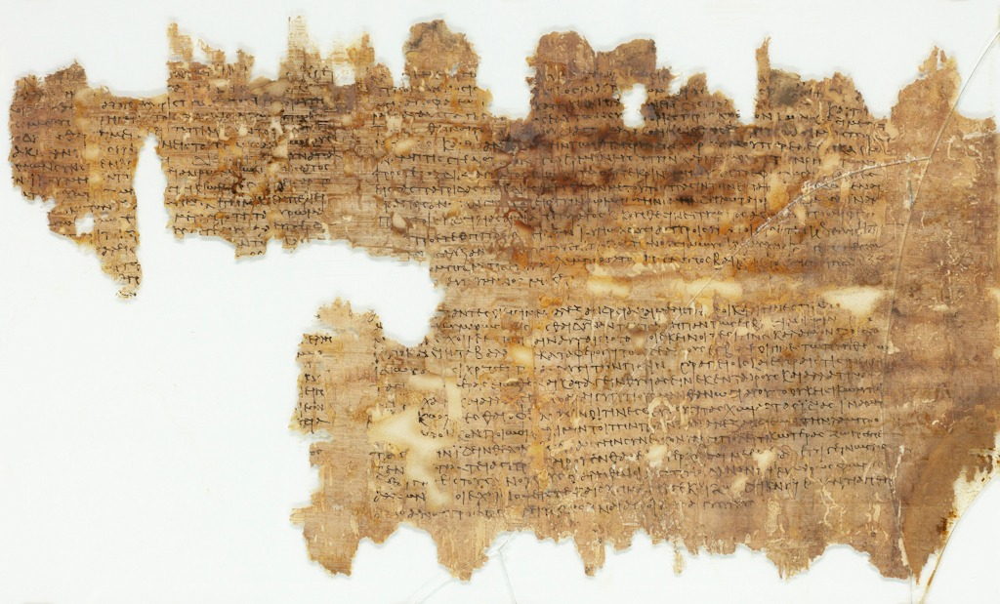

Constitutio Antoniniana - Parallel English & Chinese Text
| 網頁原文 (English) | 對照翻譯 (Chinese) |
|---|---|
| Caracalla - the Constitutio Antoniniana Back to menu The Constitutio Antoniniana Caracalla's edict known as the Constitutio Antoniniana is preserved on a papyrus in Giessen, Germany. It was acquired in the early 20th century. The precise provenance of the papyrus, in Egypt, is unknown. |
卡拉卡拉 —《安東尼努斯敕令》 返回選單 《安東尼努斯敕令》 羅馬皇帝卡拉卡拉所頒布、被稱為《安東尼努斯敕令》的法令，目前保存在德國吉森的一份莎草紙上。這份莎草紙是在 20 世紀初獲得的。該莎草紙在埃及的具體出土來源目前尚不清楚。 |
| On the papyrus are several Greek texts, the Constitutio is on the much damaged top left part. The stylistic features of the writing on the papyrus suggest a date in the early third century. The original edict must have been in Latin. There is consensus that it was issued in 212 AD, perhaps on July 11 (it was known in Asia Minor in March 213). Papyrus Giessen 40. |
這份莎草紙上寫有數段希臘文文本，《安東尼努斯敕令》位於受損嚴重的左上角部分。紙上字體的風格特徵表明其年代約為三世紀初。該敕令的原文最初應該是以拉丁文撰寫。學術界普遍公認該敕令頒布於西元 212 年，可能是在 7 月 11 日（已知西元 213 年 3 月時此法令已傳播至小亞細亞）。 （註：即吉森莎草紙 40 號） |

| 網頁原文 (English) | 對照翻譯 (Chinese) |
|---|---|
| Edict of the [Emperor Caesar] M. Aurelius [Severus] Antoninus Augustus. [It is everywhere] necessary to attribute the main causes and reasons of events [to the divinity. I too myself have to be justly] grateful to the immortal gods, because they [safely] protected me, after such an [assault, as that of Geta, was attempted]. I believe, therefore, in the following manner to be able, magnificently and marvellously to do something equal to their greatness, if I lead, [as Romans, as many myriads] as happen to be my subjects to the [temples] of the gods. | ［凱撒皇帝］馬爾庫斯·奧理略·［塞維魯］·安東尼努斯·奧古斯都敕令：［世間萬物皆］有必要將事件的主要起因與緣由歸功於［神明。我本人也理當］對不朽的諸神抱持感激之情，因為在遭遇如［蓋塔所企圖發動的襲擊］之後，諸神［安全地］庇護了我。因此，我相信若能將我治下［成千上萬名］身為臣民的人民以［羅馬人］的身分引領至諸神的［神廟］前，便能以宏大且非凡的方式，做出與神明之偉大相稱的奉獻。 |
| I grant, therefore, to all [free persons throughout the Roman] world the citizenship of the Romans, [no other legal status remaining] except that of the dediticians; for it seems fair, [that the masses not only] should bear all the burdens, but participate in the victory as well. [This my own] edict is to reveal the majesty of the Roman people. [For this majesty happens] to be superior to that of the other [nations], the [honour] in which [the Romans have excelled from the beginning], after no inhabitant of any country [in the world has been left without citizenship and] honour. | 因此，我將羅馬公民權授予［整個羅馬］世界的所有［自由人］，除了［投降者（dediticians）］之外，［不再保留其他法律身分］；因為這看起來十分公平，［大眾不僅］應該承擔所有的負擔，也應該分享勝利的果實。［我的這項］敕令旨在彰顯羅馬人民的尊嚴。［因為這項尊嚴］優於其他［民族］，而在［世界上］沒有任何國家的居民［被排除在公民權與］榮譽之外後，［羅馬人自始便享有的這份卓越榮譽］將更加光大。 |
| [Referring to the] taxes [which exist at present, all are to pay what has been] imposed [on Romans, from the beginning of the 21st(?) year, as it is law according to the edicts and letters, issued by us and our ancestors. Displayed publicly....]. | ［關於目前存在的］稅收，［所有人自第 21 年（？）年初起，皆須繳納對羅馬人所］徵收的［稅額，正如我們及我們祖先所頒布的敕令與書信中所規定的法律。公開告示……］。 |
| 網頁原文 (English) | 對照翻譯 (Chinese) |
|---|---|
| The Emperor Caesar Marcus Aurelius Severus Antoninus Pius decrees: It is altogether necessary to attribute the causes and reasons [of recent events] to the divine. I, personally, would rightly thank the immortal gods, since although such a conspiracy [as that of Geta] has occurred, they have watched over me and protected me. I think that I am able, both magnificently and piously, to do something fitting to the gods' majesty, if I manage to bring [all] those in the empire, who constitute my people, to the temples of the gods as Romans. | 凱撒·馬爾庫斯·奧理略·塞維魯·安東尼努斯·庇護皇帝宣告：將［近期事件的］起因與緣由歸功於神明是完全必要的。我個人理當感謝不朽的諸神，因為儘管發生了像［蓋塔］那樣的陰謀，祂們依然看顧並庇護著我。我認為，如果我能成功將帝國境內構成我子民的［所有］人，以羅馬人的身分帶到諸神的神廟前，我就能以宏大且虔誠的方式，做出符合神明威嚴的舉措。 |
| I therefore give everyone in the Roman world the Roman citizenship: preserving customary law, without additional privileges. It is necessary for the masses not only to share in our burden, but also to be included in victory. This decree will spread the magnificence of the Roman people. For it now happens that the same greatness has occurred for everyone, by the honour in which the Romans have been preeminent since time immemorial, with no-one from any country in the world being left stateless or without honour. | 開此，我賦予羅馬世界中的每個人羅馬公民權：同時保留習慣法，且不增加額外特權。大眾不僅需要分擔我們的負擔，也必須被納入勝利的行列中。這項法令將傳播羅馬人民的宏偉。因為如今，由於羅馬人自古以來便享有的卓越榮譽，同樣的偉大已降臨在每個人身上，世界上任何國家的任何人都將不再處於無國籍或失去榮譽的狀態。 |
| Referring to the taxes that exist at present, all are due to pay those that have been imposed upon the Romans from the beginning of their twenty-first year [of age], as it is the law, according to the edicts and rescripts issued by us and our ancestors. Displayed publically ... | 關於目前存在的稅收，所有人都有義務繳納自二十一歲起對羅馬人所徵收的稅金，正如法律所規定，且依據我們和我們祖先所頒布的敕令與諭答（rescripts）。公開告示…… |
| 網頁原文 (English / Latin) | 對照翻譯 (Chinese) |
|---|---|
| The effect of the constitution is found in some papyri. The beneficiaries received the nomen gentile Aurelius from Caracalla, for example "Aurelius Zosimos, who before the divine gift was called Zosimos son of Leonides" (Berliner griechische Urkunden 2, 655; 215 AD). The Constitutio is referred to in other literary and legal texts, but not many. |
該敕令的影響可見於一些莎草紙紀錄中。受益者從卡拉卡拉那裡獲得了「奧理略（Aurelius）」這個氏族名（nomen gentile），例如：「奧理略·索西莫斯，在獲得神聖恩賜前被稱為列奧尼達斯之子索西莫斯」（柏林希臘文莎草紙文獻集 2, 655；西元 215 年）。 其他文學和法律文本中也提到了這份敕令，但數量並不多。 |
| Cassius Dio 78.9.5 He made all the people in his empire Roman citizens; nominally he was honouring them, but his real purpose was to increase his revenues by this means, inasmuch as aliens did not have to pay most of these taxes. |
卡西烏斯·狄奧《羅馬史》78.9.5 他使帝國境內的所有人都成為羅馬公民；名義上他是在授予他們榮譽，但其真實目的是為了藉此增加他的財政收入，因為外邦人原本不需要繳納這些稅收中的大部分。 |
| Historia Augusta, Septimius Severus 1.2 Cui civitas Lepti, pater Geta, maiores equites Romani ante civitatem omnibus datam. Septimius Severus' native city was Leptis, his father was Geta; his ancestors were Roman knights before citizenship was made universal. |
《奧古斯都歷史》，塞普蒂米烏斯·塞維魯傳 1.2 拉西文原文：Cui civitas Lepti, pater Geta... 塞普蒂米烏斯·塞維魯的故鄉是萊普提斯，他的父親是蓋塔；在他的祖先成為羅馬騎士時，羅馬公民權尚未普及給所有人。 |
| Aurelius Victor, Liber de Caesaribus 16.12 (assigning to Marcus Aurelius) Data cunctis promiscue civitas Romana. The right of citizenship was given to everyone without distinction. |
奧里略·維克托《凱撒傳》16.12（此處誤歸功於馬爾庫斯·奧理略） 拉丁文原文：Data cunctis promiscue civitas Romana. 羅馬公民權毫無區別地被授予了所有人。 |
| Augustinus, De Civitate Dei 5.17 Praesertim si mox fieret quod postea gratissime atque humanissime factum est, ut omnes ad Romanum empireum pertinentes societatem acciperent civitatis et Romani cives essent. Especially if that had been done at once which afterwards was done most humanely and most acceptably, namely, the admission of all to the rights of Roman citizens who belonged to the Roman empire. |
奧古斯丁《上帝之城》5.17 拉丁文原文：Praesertim si mox fieret... 特別是如果當時能立即實行後來那項極其仁慈且令人愉悅的舉措，即接納所有屬於羅馬帝國的人享有羅馬公民權，並使他們成為羅馬公民。 |
| Sidonius Apollinaris, Epistulae 1.6.2 Urbem, domicilium legum, gymnasium litterarum, curiam dignitatum, verticem mundi, patriam libertatis, in qua unica totius urbis civitate soli barbari et servi peregrinantur. Rome, the abode of law, the training-school of letters, the fount of honours, the head of the world, the motherland of freedom, the city unique upon earth, where none but the barbarian and the slave is foreign. |
西多尼烏斯·阿波利納里斯《書信集》1.6.2 拉丁文原文：Urbem, domicilium legum... 羅馬，法律的居所、文學的溫床、榮譽的泉源、世界的頂點、自由的祖國；在這座地球上獨一無二的城市中，除了蠻族和奴隸之外，沒有人是外人（外邦人）。 |
| Digesta 1.5.17 Ulpianus libro 22 ad edictum. In orbe Romano qui sunt ex constitutione imperatoris Antonini cives Romani effecti sunt. Ulpianus, On the Edict, Book XXII. According to a Constitution of the Emperor Antoninus, all those who were living in the Roman world were made Roman citizens. |
《學說彙纂》1.5.17 烏爾比安《告示評註》第 22 卷。拉丁文：In orbe Romano qui sunt... 根據安東尼努斯皇帝的憲令（敕令），凡是居住在羅馬世界（帝國疆域）內的人，皆被賦予羅馬公民權。 |
| Digesta 50.1.33 Modestinus libro singulari de manumissionibus. Roma communis nostra patria est. Modestinus, On Manumissions. Rome is our common fatherland. |
《學說彙纂》50.1.33 莫德斯蒂努斯《釋奴單行卷》。拉丁文：Roma communis nostra patria est. 羅馬是我們共同的祖國。 |
| Justinianus Novellae 78.5 (assigning to Antoninus Pius) Sicut enim Antoninus Pius cognominatus, ex quo etiam ad nos appellatio haec pervenit, ius Romanae civitatis prius ab unoquoque subiectorum petitus et taliter ex eis qui vocantur peregrini ad Romanam ingenuitatem deducens ille hoc omnibus in commune subiectis donavit ... For as Antoninus, surnamed Pius (from whom this title has descended to Our times), having been petitioned by each of his subjects, and afterwards by those designated strangers, to give them the right of citizenship by making them freeborn Romans, conferred this privilege upon all his subjects ... |
查士丁尼《新律》78.5（此處誤歸功於安東尼努斯·庇護） 英文原文對應：For as Antoninus, surnamed Pius... 因為正如被冠以「庇護」稱號的安東尼努斯（此稱號亦沿襲至今），在受到其每位臣民以及隨後被稱為「外邦人」群體的懇求，希望透過使他們成為自由出身的羅馬人來賦予他們公民權後，他便將這項特權普遍授予了所有的臣民…… |
| 網頁原文 (English) | 對照翻譯 (Chinese) |
|---|---|
| [Another edict: Edict of the] Emperor [Caesar M. Aurelius Severus Antoninus Augustus. Listen to a great] action [of mine, that the whole world may rejoice and the anxieties of] all come to an end, [let all the exiles who have been condemned, on whatever charge] or blame [and in whatever manner, be restored. All are to] return [to their own native countries as soon as this edict has been displayed publicly, with the exception of men banished by my] lord [and divus, your father Severus for] any [reason. They are to be free everywhere, wherever our officials] have let them go; [and all the men whom I have reinstated are to live for the future, as is right,] according to the edicts [and letters, issued by us and our ancestors]. | ［另一項敕令：凱撒·馬爾庫斯·奧理略·塞維魯·安東尼努斯·奧古斯都］皇帝［敕令。傾聽我的一項重大］舉措，［好讓全世界都能歡欣鼓舞，讓］所有人的［焦慮］得以平息：［讓所有因任何指控］或過錯、［且不論以何種方式被判流放的流亡者，全數獲得恢復名譽。所有人一經本敕令公開發布，應立即］返回［他們各自的家鄉，唯獨因任何原因被我］主［及神聖的父親塞維魯所放逐的人除外。在我們官員］允許他們前往的［任何地方，他們皆應享有自由；所有被我恢復權利的人，未來皆應正當地依據我們以及我們祖先所頒布的］敕令［與書信生活］。 |
| [Another edict: Edict of the Emperor Caesar Marcus Aurelius Severus Antoninus] Augustus [........ ]. I command that to the men whom I have reinstated there must be attributed [what is due] to them, [and] I give the knight's horse back to those who had it before, and a [new] verification of the properties [which are required for qualification to municipal offices] will be necessary [or, in addition,] a notification(?) of a decision [has to be made] referring to such [persons as are not] to hold or to occupy the municipal offices. And then the following: Hereafter, for persons to whom the membership of a certain class of the community of lawyers has been forbidden for a certain time, this annotation of infamy is not to be prolonged after the time has expired. And if it is clear how fully I have shown my grace, nevertheless my grace is not to be interpreted too narrowly in accordance with the regulations of the earlier decree, in which I decided as follows: "All are to return to their own native countries". It was my clear intention that the way should be free hereby for all these to the whole Empire as well as to my capital, Rome, that no cause for ignominy or a new beginning of insulting treatment from malicious persons should be left. Published in Rome, the fifth day before the Ides of July under the consulate of the two Aspri, i.e. 16th Epeiph of year 20; and (published) in Alexandria by the procurator usiacus in the 21st year, 16th Mecheir, and entered into the official book of documents by his excellency the prefect Baebius Juncinus on the fourth of (the) same month Mecheir. | ［另一項敕令：凱撒·馬爾庫斯·奧理略·塞維魯·安東尼努斯·奧古斯都皇帝敕令……］。我命令，必須將［彼等應得之物］歸還給那些被我恢復權利的人，［並且］我將騎士的馬匹歸還給此前擁有它的人；而對於［擔任市政官職所需的］財產資格，將需要進行［重新］核實，［或者，此外］必須針對那些［不應］擔任或占據市政官職的［人］發出裁決通知（？）。隨後規定如下：此後，對於被禁止在一定時間內加入特定律師群體階層的人，此項「不名譽標記（infamy）」在期限屆滿後不得延長。儘管我已充分展現了我的恩典，然而不應對照先前法令的規定對我的恩典做出過於狹隘的解讀表述。我在先前的法令中裁定如下：「所有人皆應返回各自的家鄉」。我的明確意圖是，藉此讓所有人前往整個帝國以及我的首都羅馬的道路皆暢通無阻，從而不留下任何蒙受恥辱或讓惡意之人重新進行侮辱性對待的藉口。於兩位阿斯佩爾（Aspri）擔任執政官期間、七月司值日（Ides of July）前第五日（即第 20 年的埃佩夫月 16 日）公布於羅馬；並於第 21 年的麥基爾月 16 日由財政官（procurator usiacus）公布於亞歷山大港，並由長官（prefect）巴埃比烏斯·容奇努斯閣下於同月麥基爾月四日登錄於官方文書中。 |
| Another [epistle]: All Egyptians who are in Alexandria, and especially country-folk, who have fled from other parts of Egypt and can easily be detected, are by all manner of means to be expelled, with the exception, however, of pig-dealers and riverboatmen and the men who bring down reeds for heating the baths. But expel all the others, as by the numbers of their kind and their uselessness they are disturbing the city. I am informed, that on the day of the festival of Sarapis and on certain other festal days Egyptians are accustomed to bring down bulls and other animals for sacrifice, or even on other days; they are not to be prohibited [from doing] this. The persons who ought to be prohibited are those who [flee] from their own districts to escape rustic toil, not [those], however, who congregate here with the object of viewing the glorious city of Alexandria or come down for the sake of enjoying a more civilized life [or] for incidental business. | 另一項［書信］：所有身在亞歷山大港的埃及人，特別是那些從埃及其他地方逃來且極易被察覺的鄉下人，必須採取一切手段予以驅逐；然而，豬販、內河船夫以及運送加熱浴池用蘆葦的人除外。但必須驅逐所有其他人，因為他們的人數眾多且毫無用處，正在擾亂這座城市。我接獲稟報，在塞拉皮斯（Sarapis）節日當天以及其他某些節日，甚至在其他日子裡，埃及人習慣運送公牛和其他動物前來獻祭；不應禁止他們這樣做。應當禁止的是那些為了逃避農耕勞作而從自己地區［逃離］的人，而非那些為了瞻仰輝煌的亞歷山大港而聚集於此、或為了享受更文明的生活［或］因臨時事務而來的人。 |
| A further extract: For genuine Egyptians can easily be recognized among the linen-weavers by their speech, which proves them to have assumed the appearance and dress of another class; moreover, their mode of life, their far from civilized manners reveal them to be Egyptian country-folk. Other texts on P.Giss. 40. Translation Fritz Moritz Heichelheim, 1941. | 進一步的摘錄：因為真正的埃及人很容易在亞麻織工中被識別出來，這可以透過他們的言談得到證實，這證明了他們偽裝成另一個階層的外表與服飾；此外，他們的生活方式和遠非文明的舉止，暴露了他們身為埃及鄉下人的身分。吉森莎草紙 40 號（P.Giss. 40）上的其他文本。弗里茨·莫里茨·海切爾海姆譯，1941 年。 |